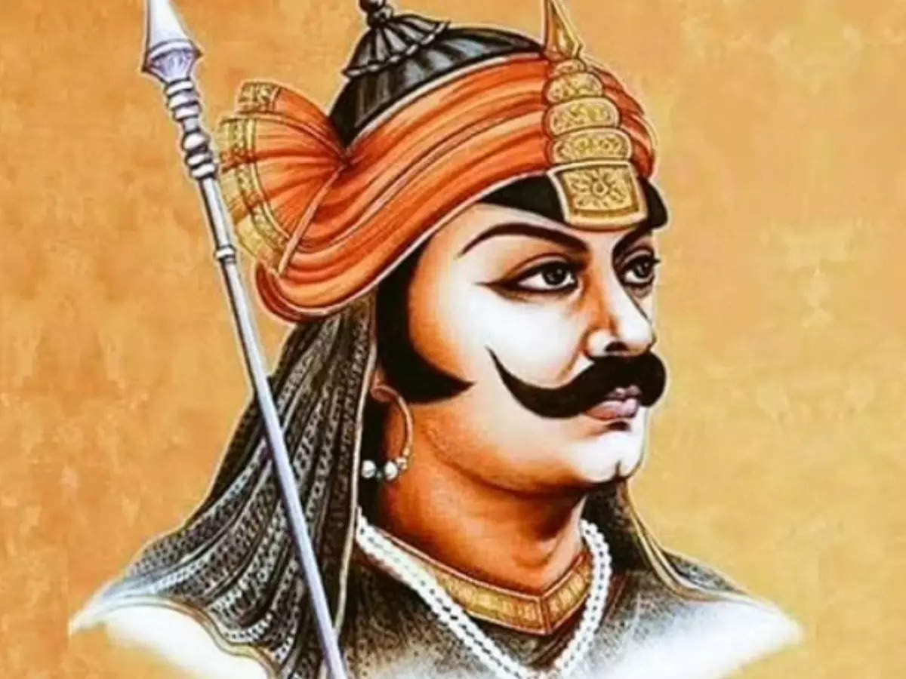

Maharana Pratap
The man who is a symbol of courage and resilience.

Hindu Rajput king of Mewar from the Sisodia dynasty.
Here's a time-line of Maharana Pratap life:
- 1540 - : Birth - Maharana Pratap was born on May 9, 1540, in Kumbhalgarh, Rajasthan, India. He was born into the Sisodia Rajput clan, which ruled the kingdom of Mewar.
- 1568 -: Battle of Haldighati - One of the most significant events in Maharana Pratap's life was the Battle of Haldighati, which took place on June 18, 1568. This battle was fought between the forces of Mewar, led by Maharana Pratap, and the Mughal Empire, led by Emperor Akbar. Although Maharana Pratap's forces put up a valiant fight, they were outnumbered and ultimately had to retreat.
- 1576 - : Battle of Rakht Talai - Maharana Pratap fought another major battle against the Mughals in 1576, known as the Battle of Rakht Talai. This battle was fought near present-day Udaipur. Once again, Maharana Pratap's forces faced the Mughal army, but this time they managed to inflict heavy casualties on the Mughals before retreating to the Aravalli hills. Although the battle was inconclusive, it is seen as a symbol of Maharana Pratap's determination and resistance against the Mughal Empire.
- 1582 - : Death - Maharana Pratap passed away on January 29, 1597, at the age of 56. He died in Chavand, a fortress in Rajasthan. Despite facing numerous challenges and hardships throughout his life, Maharana Pratap remained committed to the defense of Mewar's independence and is remembered as a legendary figure in Indian history.
Maharana Pratap's life and struggles continue to inspire people in India, particularly in Rajasthan, where he is revered as a national hero. His valor, patriotism, and refusal to surrender to the mighty Mughal Empire have made him a symbol of courage and resilience." —Maharana Pratap